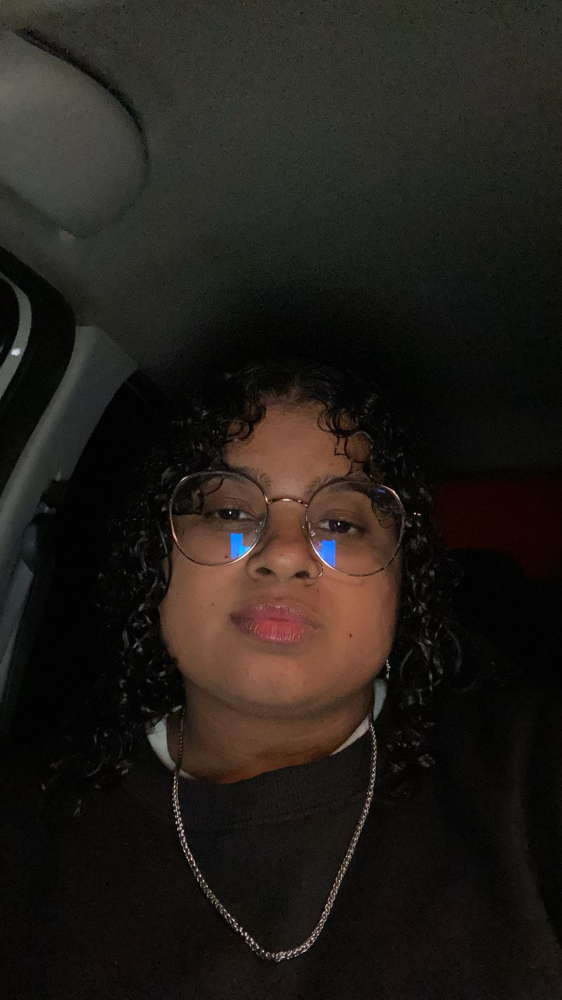

Sobre o E-Loop ♻️
O E-Loop é uma plataforma que conecta pessoas e ONGs para dar uma nova vida a produtos usados. Nosso objetivo é incentivar o reuso e reduzir o desperdício, promovendo uma economia circular e solidária.
Missão
Promover o consumo consciente e sustentável, conectando quem deseja doar, vender ou reutilizar produtos.
Visão
Ser referência nacional em soluções digitais voltadas para a sustentabilidade e economia colaborativa.
Valores
Respeito ao meio ambiente, solidariedade, inovação e responsabilidade social.
🌎 Nosso Impacto
O E-Loop busca contribuir diretamente com os Objetivos de Desenvolvimento Sustentável (ODS), especialmente o ODS 12 - Consumo e Produção Responsáveis e o ODS 1 - Erradicação da Pobreza, ao incentivar práticas de reutilização e doação.
👩💻 Nossa Equipe
Karine Kessen
Gestão e Desenvolvimento

Maria Heloisa
Design e Experiência do Usuário
Pablo Camargo
Comunicação e Sustentabilidade